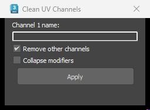

Tools / Clean UV Channels
Clean UV Channels
Name the first UV channel and clear all the others, on every selected object.
What it does
Clean UV Channels tidies the UV channels of the selected objects. It can give map channel 1 a name (shown in Max's Channel Info), delete every other map channel that holds data, and collapse the modifier stack. It is meant for getting many objects ready for export with one clean UV set.

How to use it
- Select the objects.
- Run Clean UV Channels (macro in the 9000 Toolkit category).
- Fill in the options and click Apply. The dialog reports what it did, for example how many extra channels were cleared.
Options
| Option | What it does |
|---|---|
| Channel 1 name | Names map channel 1 on every selected object. Leave it empty to keep the current names. |
| Remove other channels | Clears every map channel above 1 that holds data (on by default). It looks at the real channels of the object, so gaps in the numbering are handled. |
| Collapse modifiers | Collapses the stack and converts the object to Editable Poly (off by default). |
Good to know
- It works on geometry objects that can be converted to an editable mesh. Cameras, lights and similar objects are skipped.
- The whole selection is one undo step.
- If the Modify panel is open, it switches to Create while working and comes back afterwards.